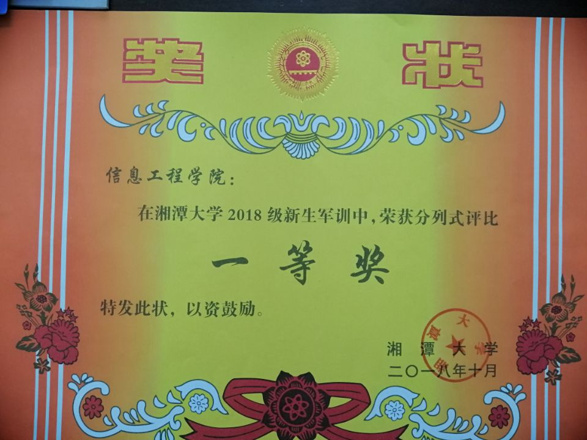

军训不但培养人有吃苦耐劳的精神，而且能磨练人的坚强意志。苏轼有句话：“古之立大事者，不惟有超世之才，亦必有坚忍不拔之志。”这句话意思是成功的大门从来都是向意志坚强的人敞开的，甚至能够说是只向意志坚强的人敞开。
心目中的军训充满教官的训斥；心目中的军训是紧张与艰苦的合奏；心目中的军训更是无常地响起那集合手哨音，还有那瓢泼大雨下的大集合、严训练；心目中的军训生活成百上千次地浮此刻我的脑海，闪此刻我的眼前。但我还是满怀欣喜与信心地去拥抱我向往已久的军训。
在军训中，很苦很累，但这是一种人生体验，战胜自我，锻炼意志的最佳良机。心里虽有说不出的酸甜苦辣，在烈日酷暑下的曝晒，皮肤变成黑黝黝的，但这何尝不是一种快乐，一种更好地朝人生目标前进的勇气，更增添了一份完善自我的信心吗？
我满怀信心地开始了真正的训练。教官一遍遍耐心地指导代替了严厉的训斥。训练场上不但有我们整齐的步伐，也有我们阵阵洪亮的口号声，更有我们那嘹亮的军营歌曲。
站军姿，给了你炎黄子孙不屈脊梁的身体，也给了你龙之传人无穷的毅力。练转身，体现了人类活跃敏捷的思维，更体现了群众主义的伟大。不积滴水，无以成江海。没有我们每个人的努力，就不可能有一个完整的，高质量的方队。训练的每一个动作，都让我深深地体会到了团结的力量，合作的力量，以及团队精神的重要，我相信，它将使我终身受益，无论在哪个岗位上。
其实在自己的人生路上，也就应印满一条自己脚步的路，即使那路到处布满了荆棘，即使那路每一步都是那样的泥泞、那样的坎坷，也得让自己去踩、去踏、去摸索、去行进！我想那样的路才是真实的自我写照，决无半点虚假伪装之意。
同学们，我们的青春因为有了这一段军旅生活而变得激扬奋发；我们的青春因为有了汗水的洗礼而变得坚韧不拔！我们的青春犹如那军中绿花般贞洁美丽。
有人说：人生下来第一件事就是哭，没有笑的。上帝也许是不公平的，但他给了我们公平的时间和大脑；他注定人务必从苦到乐，不付出哪来的收获？正如农民种田一样，春天播种，然后要施肥、治虫等等，经过一系列苦活、累活之后，秋天才会有收获
当尝到成功的喜悦的时候，你会觉得，十几天受的的苦是值得的!
